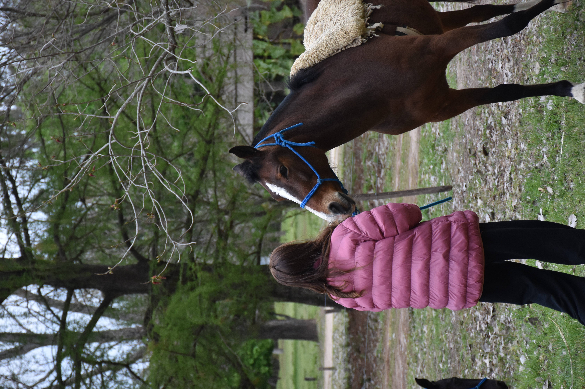

Vínculo con animales
- Contacto directo con caballos y otros animales de la escuela.
- Se enseña y practica el cuidado responsable de los animales.
- Fomentamos la empatía.
Naturaleza, Caballos, Deporte, Agua, Amistad, Arte, Musica
Seguí bajandoLa Escuelita de Campo es un espacio educativo, formativo y de acompañamiento integral para niños y adolescentes. Busca transmitir herramientas, valores y aprendizajes a través del vínculo con la naturaleza, los animales, el deporte, el movimiento, el juego y la convivencia.
Queremos construir un camino de autonomía, confianza, responsabilidad, respeto y pertenencia. Es un proyecto que nace del amor y busca generar aprendizaje, bienestar y prosperidad compartida.
A uno mismo, a los demás, a los animales y al entorno.
Deporte, desafíos, agua y disfrute corporal.
De manera experiencial, a través del juego y la vida cotidiana.
Amistad, cooperación, escucha y sentido de pertenencia.
Todas las actividades de la escuela están diseñadas bajo un modelo experiencial, donde el aprendizaje se da a través del juego y de las situaciones de la vida cotidiana.
El objetivo transversal de cada tarea es construir autonomía, confianza, responsabilidad y respeto en los participantes.
Las jornadas se dividen en diferentes áreas de experiencia que buscan hacer crecer cuerpo, mente y corazón.
Si bien la comunidad es una sola, las actividades y sus desafíos se adaptan a las diferentes edades y etapas de desarrollo de cada grupo. Cada manada tiene su propia identidad, con un color y un símbolo que la representan.
2½–3
años · Niños
Las actividades están enfocadas en sus primeras exploraciones del entorno y de sí mismos.
4–5/6
años · Niños
La dinámica principal es el descubrimiento a través del juego.
7–9
años · Niños
Las actividades incrementan su nivel de movimiento y adoptan un formato de aventura.
10–12
años · Preadolescentes
Las propuestas incluyen desafíos más complejos, pensados para fomentar su autonomía personal.
13–17
años · Adolescentes
Las dinámicas están orientadas a su crecimiento personal y a consolidar su sentido de pertenencia en la comunidad.



Lunes 16 de noviembre de 2026
Lunes a jueves, de 16:00 a 20:00
Pensando en facilitar el acceso a nuestra escuelita, contemplamos la posibilidad de incorporar un servicio de transporte desde la ciudad de Santa Fe hasta Solares de la Laguna.
Este servicio estará sujeto a la cantidad de familias interesadas y a la conformación de un grupo mínimo de alumnos que requieran traslado.
Por eso, si necesitan transporte, les pedimos que lo indiquen en el formulario de inscripción. Esto nos permitirá evaluar la demanda y organizar una alternativa de traslado.
Aclaración: El servicio de transporte será coordinado y gestionado por la escuela pero contará con un costo adicional.
Las jornadas no se suspenden por lluvia. En caso de mal clima, contamos con espacios cubiertos y protegidos, especialmente acondicionados para continuar todas las actividades con total comodidad y seguridad.
Durante los días lluviosos desplegamos una propuesta lúdica y pedagógica adaptada: talleres de cocina y merienda casera, espacios de lectura y narración de cuentos, juegos de mesa cooperativos, arte, expresión plástica y dinámicas de integración grupal.
4 días
A partir de Enero.
4 días semanales · Lunes a jueves de 16:00 a 20:00 hs.
2 días
A partir de Noviembre.
Martes y Jueves de 16:00 a 20:00 hs.
Para solicitar la inscripción, las familias deberán completar el formulario que se encuentra a continuación.
Una vez recibida la solicitud, nuestro equipo evaluará la disponibilidad de cupos según la edad, el grupo y la modalidad de asistencia elegida.
Nos comunicaremos personalmente con cada familia para informarles sobre la disponibilidad y acompañarlas en los próximos pasos del proceso de inscripción.
Conocé los costos de cada modalidad y qué incluyen. Estos precios son promocionales y se mantendrán vigentes hasta el 1 de noviembre.
Ver valores